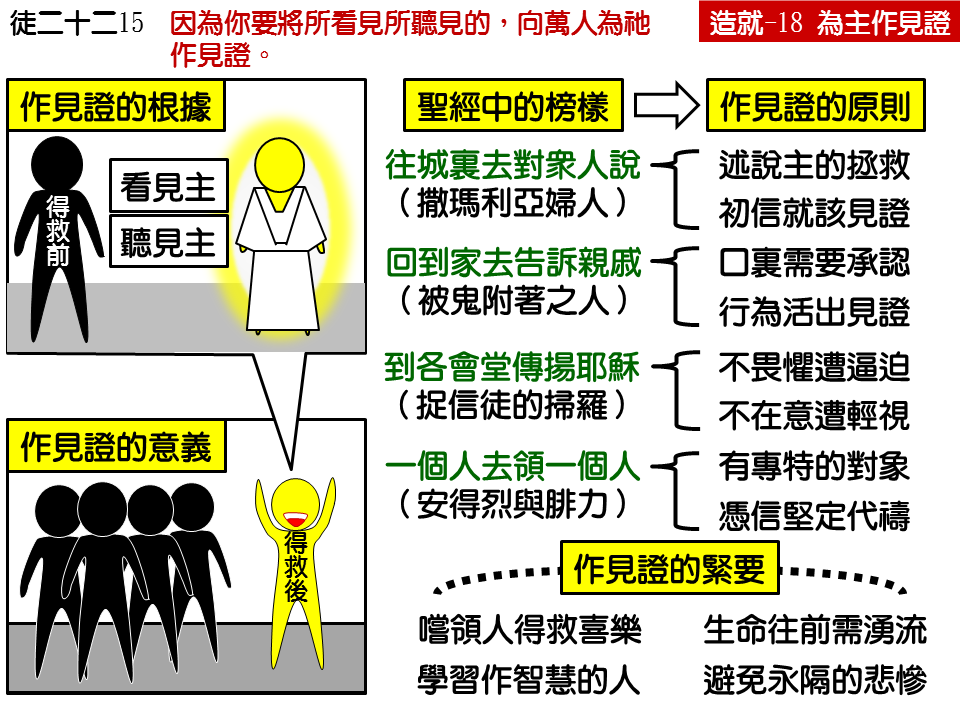

诗歌：662 首、补 835首
重要经文：
使徒行传二十二章十五节：因为你要将所看见所听见的，向万人为祂作见证。
马可福音五章十九节：耶稣不许，却对他说，你回家去，到你的亲属那里，将主为你作了何等大的事，并怎样怜悯你，都告诉他们。
约翰福音一章四十一至四十二节：他先找着自己的哥哥西门,对他说，我们遇见弥赛亚了。（弥赛亚翻出来，就是基督。）于是领他到耶稣那里。耶稣看着他说，你是约翰的儿子西门，你要称为矶法。（矶法翻出来，就是彼得。）
纲目要点：
壹 作见证的意义——徒二二5。
贰 作见证的榜样——约四28~29，可五19，路六13：
一 往城里去对众人说－约四 28~29。
二 回到家去告诉亲戚－可五 19。
三 到各会堂传扬耶稣——徒九19~21。
四 一个人去领一个人——约一41~42。
叁 作见证的紧要：
一 带人得救比自己得救还要快乐。
二 学习作有智慧能带人得救的人。
三 要享受生命活水流出需要开口。
四 避免与亲友间永远分开的悲惨。
信息选读：
作见证的意义
什么叫作见证呢？行传二十二章十五节，主叫亚拿尼亚对扫罗说，“因为你要将所看见所听见的，向万人为祂作见证。”所以，见证的根据是在乎看见和听见。你不能见证你所没有亲眼看见的事，你也不能见证你所没有亲耳听见的话。你的见证如果不继续，福音传到你身上就停止了。你固然是已经得救了，有主的生命了，亮了，但是，如果你不叫别人也亮，那么到你烧完就了了。你不应当双手空空的去见主，你应当带着许多人到主的面前去。
初信的人要在起头的时候就学习作见证，就学习带领人归主。这件事千万不要放松。起头不开口，过些日子成了习惯，要想恢复就非常费力。你信了主，第一次尝着了这么大的爱，第一次得着了这么大的救主，第一次得着了这么大的救恩，第一次得着了这么大的释放，而你不能为着主作见证，把你当作一个光去点亮别人，那你真是太对不起主了！
作见证的榜样－对众人说
每一个基督徒都有作见证介绍主的必要。主把我这么大的罪人拯救了，祂若不是基督，那么祂是谁？祂若不是神的儿子，那么祂是谁？我没有法子不开口，我非开口作见证不可。道理我虽然不会讲，至少我认识祂是基督，祂是神的儿子，祂是神所立的救主。我看见我是罪人，被主拯救了。到底这是怎么一回事，我说不上来，但是你们来看，我这个人是变了，大变了！
人一得救，就应当把所看见的、所懂得的去对人说。不要说你所不懂得的，不要讲那么多那么长的话给人听，只要说你所知道的。你只要这样见证就够了，只要讲你的感觉就够了。有的人可以说，“在我没有信主之前，我是何等的消极；信主之后是何等的积极。从前我是一直追求而没有满足，现在我是从心里有说不出来的甘甜。我没有信主的时候，晚上睡不着，现在连睡眠都好了。我从前常常忧虑郁闷，现在无论什么都觉得平安喜乐了。”你可以把你所经过的事实说出来给人听。不必说你所不能说的话，不必讲你所不知道的事。不要越过你的情形来说你自己所不知道的话，以致引起人的辩论。你把自己当作活的见证放在人的面前，人就没有话说。
作见证的榜样－对亲戚说
你蒙恩的时候，主要你让家里的人知道，让附近的人知道，让亲戚、邻舍、朋友、同事都知道你已经是个得救的人。你不只要告诉他们你信了耶稣，并且要告诉他们主为你作了何等大的事。主要你把祂为你所作的事告诉人，主要你把自己的事向他们承认，向他们作见证。当你这样作的时候，你也把别人点亮了，救恩就不停止在你身上，救恩就能继续。
要在家里作见证，必须行为有大改变。我们必须在家里显出，我们信主以后比信主以前是有何等奇妙的大改变，才能使家里的人听我们的话语。不然，他们心中不会佩服。我们必须比从前公义，比从前舍己，比从前爱人，比从前殷勤，也比从前喜乐。如果我们没有行为上的改变，那他们是不会相信我们的。同时，我们行为改变了，我们应该把我们改变的原因告诉他们，要向他们作见证。
作见证的榜样－一个人领一个人
一个人信主之后，不只要到城里去对人讲，不只要回家去对人讲，不只要在会堂里作见证，并且还要有一个特别的见证，就是一个人去领另外一个人信主。安得烈一信了主，就去带领他的哥哥彼得来遇见主。虽然后来彼得是比安得烈更有恩赐的使徒，但是安得烈是引导彼得信主的人。腓力和拿但业是朋友，他也是自己先接受主，然后带领朋友也来接受主。安得烈是去带领他的弟兄，腓力是去寻找他的朋友，他们都是一个领一个的把人带到主面前。一个初信的人，越早开口带领人相信主越好，总不能让时间空过。
带人得救的喜乐
每一个信徒在一生之中，有两个日子是快乐的日子。第一个快乐的日子是相信主的日子，他已经接受了主，所以他特别快乐。第二个快乐的日子，就是他第一次带领人归主的日子。当他第一次带领一个人到主面前去的时候，那个快乐，也许比他自己得救还要快乐。许多基督徒不快乐，是因为他们从来没有为主说过一句话，从来没有带领一个人到主面前去。
向人涌流活水
当你在属灵的路上多走一点的时候，就会听见弟兄说，“你应当作活水的管子。你应当接在圣灵里，让活水－圣灵－流到你的身上来。”但是，活水的管子有两个头。圣灵的管子，生命的管子，有两个头。一个头是向着圣灵、向着生命、向着主开的，一个头是向着人开的。向着人的这一头如果没有开，活水就永远不会流。没有人可以错误到一个地步，以为向着主开就够了。凡只向着主开的，生命的水还是不会流。要向着主开一个头，向着人也开一个头；第二个头一开，活水就流出来。有许多人在神面前没有能力，也许是因为他们向着主的头没有开；但恐怕更多的人是因为他们向着人作见证、带领人归主的那一头没有开，所以他们没有能力。
永远分开的悲惨
有许多人没有听见福音，是因为你没有作见证，结果就和你永远的分开，而不是暂时的分开。那一个关系真是太大。我们要知道这一个分别是永远的分别，而不是暂时的分别。何等可惜，一错过机会，这个人就永远不能到天上去了！所以，我们总要寻找机会作见证。如果我们都这样作传福音的人，带领人归主，不多几年，属灵的生命就要大大的长进。
课程复习：
一 作见证是什么意思？
二 我们得救后向人作见证时要说什么？
三 我们如何能向亲戚和家人作见证？
四 向人作见证对基督徒有何助益？
五 我们若没有向人作见证，会有何悲惨的结果？
